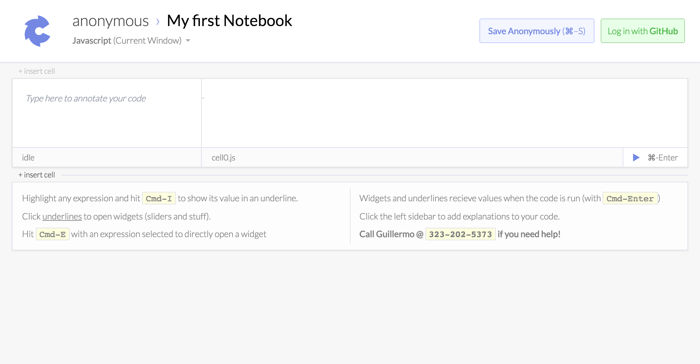
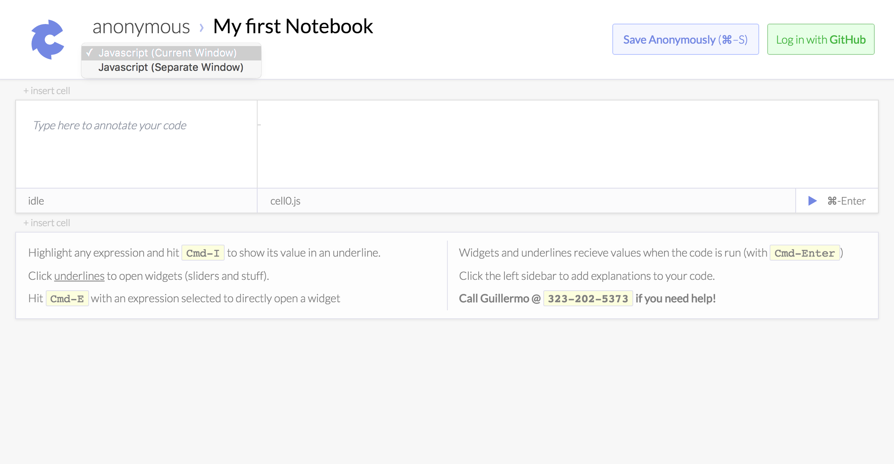
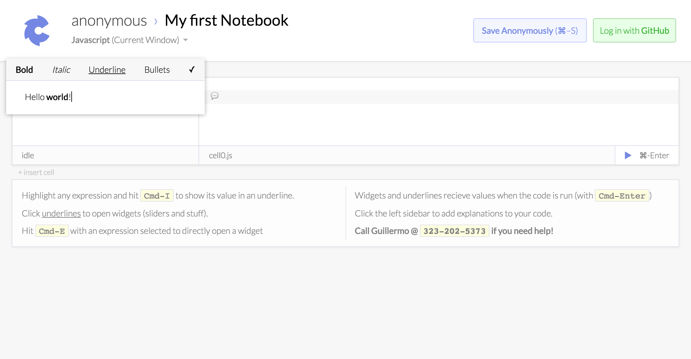
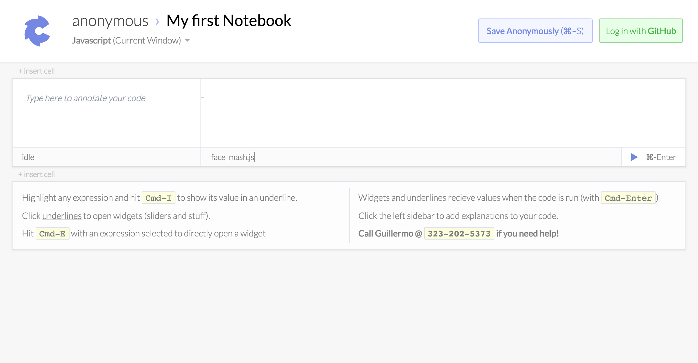

Why Carbide?
Who is Notebook Programming?
Notebooks, as opposed to say typewriters, let you sketch your ideas anywhere on the page, however you want. In a noteboook programming environment, you write and run code out of order, and often investigate multiple avenues of attack in parallel.Widgets
Numbers
slider

integer

scrubber

Strings
string

string_diff

color

buffer

Visualizing Data
chart

surface

ndarray

matrix

Objects
regexp

date

json

json_diff

Basic Widgets
date
html

map

object

react

regex

selector

tree

Miscellaneous
base

buffer
chart

color

date

html
insert
json
json_diff
kernel
lit
map
matrix
object
regex
rename
selector

slider

string
string_diff

tree
Making Your Own Widgets
Carbide widgets are just react components (what's a react component) with a static class propertytitle and a static member function called match, with the signature match(value, ast). Whenever you open a widget on some expression, carbide runs the expressions value and ast through all of the installed widgets' match functions to figure out which widgets it should show in the tabs.
If you have a react component with a static title and match function, you can add it to your notebook like this:
import React from 'react'
class YOLOWidget extends React.Component {
static title = '#YOLO'
static match(value, ast){
return value === '#YOLO'
}
render(){
return <a href="https://en.wikipedia.org/wiki/YOLO_(motto)">
https://en.wikipedia.org/wiki/YOLO_(motto)
</a>
}
}
doc.kernel.widgets.push(YOLOWidget)Technology
SystemJS/JSPM
BabelJS
Top-Level Async/Await
Babel Transformation / Top Level Await
To make everyone's life easier, Carbide cheats a bit and allows you to use the await keyword in the top level, as if you were writing an async function. The way this works under the hood is basically by detecting top level awaits, and wrapping your entire cell in an async function if it finds them. We've broken the babel transform that does this into its own repo.How Backprop Works
When you drag a slider or type in a text box or adjust a color picker on an expression that isn't a literal, Carbide tries to modify other literals in your code to accomplish that change. To make this behavior predicatable and give you some degree of control, Carbdide only modifies literals in the same cell that have open widgets attached to them. Carbide solves this optimization problem differently depending on the type of goal value. Currently, Carbide uses gradient descent for numerical values, string mapping for strings, inverted function knowledge for finctions with known inverses (which you can declare), and preperty mapping to compose these preimitives when you're modifying more complex objects.Prior Art
JSPM / Self Hosting
Carbide uses SystemJS for all of its external dependencies. Intererstingly enough, Carbide gets built by the same code that buids code you run in carbide. Carbide is essetially a ten thousand line carbide notebook, running in Carbide.CodeMirror / Matte
Code rendering is carbide is handle by the fantastic CodeMirror by Marijn, with a few carbide specific hacks to the Codemirror internals. Specifically, Carbide modidifes the codemirror syntax highlighting engine to keep checkpoints that allow it only render the code in the on-screen cells. All of the other UI is drawn inrelation to the rendered code, and lazily rendered in a similar way.Nondeterministic Layout Engine
To Enable Carbidiculous behaviors, like treating text contours as elements that can block floating widgets, Carbide's layout engine uses a form of McCarthy's AMB operator. Essentially, because Carbide need to calculate layout greedily, layouts sometimes have to exist in a superposition of two states, that can only be resolved after further layout calculations. This is sort of like quantum bogo sort for css.Advanced Topics
__unload handlers
To keep everything working smoothly when you manipulate complex projects, carbide exposes a API that allows you to specify your code's behavior when you reload it or interact with its attached widgets. To force your code to reloa when any of its dependencies change, export a variable__forceReload with a truthy value.
export const __forceReload = true__unload that optionally takes the module compiled from the newer code.
export function __unload(new_module){
cancelAllEventListeners()
unMountMyDOMElements()
// etc
}creating new kernels
Although Carbide is Javascript-first, parsing, compiling, and running code are all implemented as external modules. This means that it's possible to define a javascript madule that replaces the carbide kernel in order to run code in a different language. Here's an example of a minimal kernel:export async function parse(code){
return; // the simplest parse.
// In a better kernel we'd return some kind of ast.
}
export async function probe(start, end, probe_id, ast){
return {probe_id: probe_id}
}
export async function evaluate(ast, probe_logger){
if(ast.probe_id) probe_logger(probe_id, 4);
return 4;
}
Roadmap
Preview: Watlab Kernel
Watlab is compile-to-javascript language inspired by Matlab. Almost all of the syteax is the same as ES2015, with addition of a postfix function application operator, matrix literals, and standard matrix operators (e.g.A\b to solve a system of linear equations).
Preview: Python Kernel
A tiny kernel that communcates with a local python REPL. Pros: filesystem access, cool python libraries. Cons: requires annpm install; npm start command.
[images]
Preview: MIT Scheme Kernel
A tiny kernel that communcates with a local MIT Scheme REPL. Pros: filesystem access, arcane wizardry. Cons: requires annpm install; npm start command, arcane wizardry.
[images]
Preview: Time Travelling
One of the features that didn't quite make it into the alpha release is a Bret Victor Style program execution scrubber that lets you get a more intuitive sense of stuff like for loops:[images]Stay Tuned.